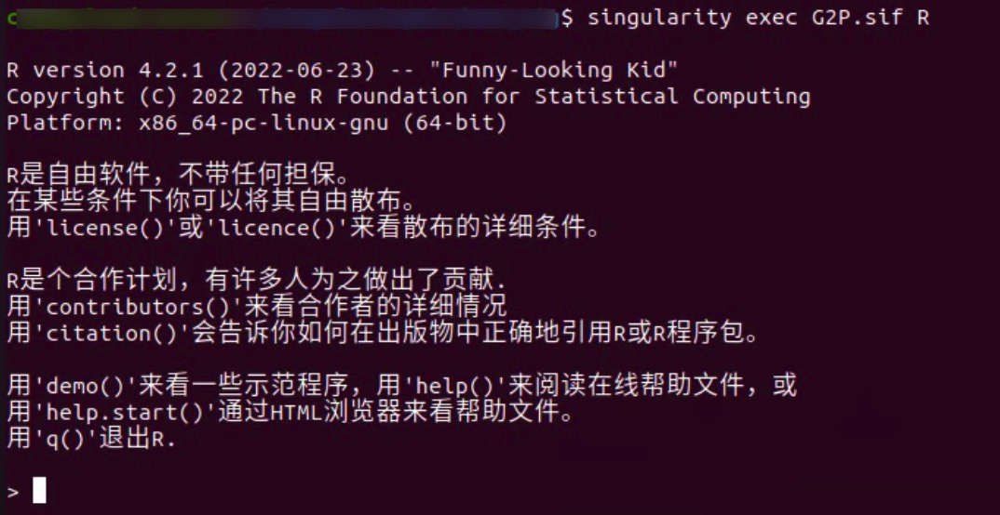
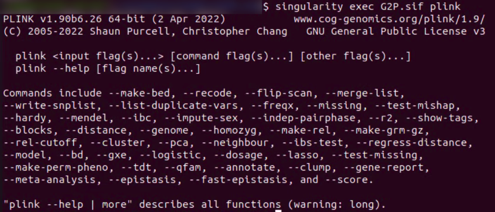
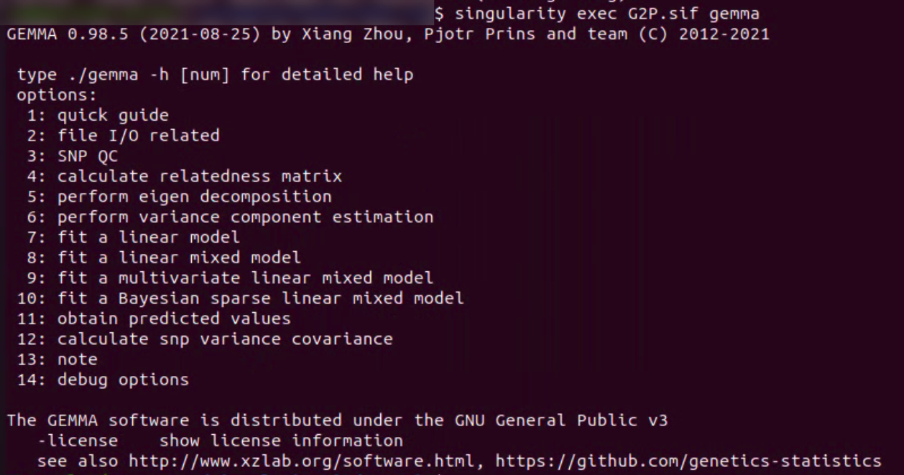
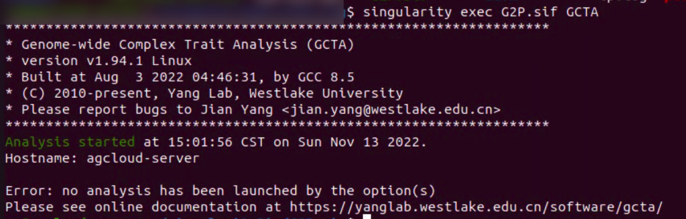
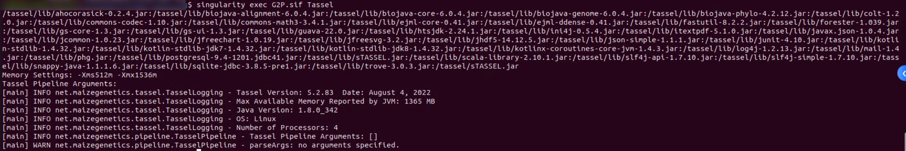
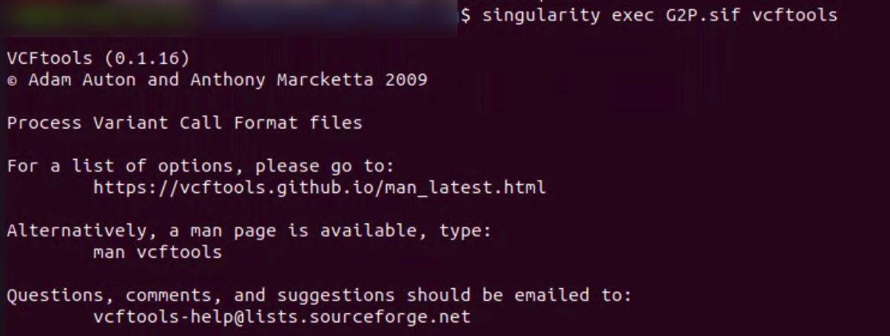

Quickstart
This section mainly recommends the installation of G2P and briefly introduces some typical usage of G2P container and G2P package to help users get started quickly. Details and other functions of GOVS,please see Tutorial
Installation
Installation of G2P container
1. Installation of Singularity (Linux, assuming ubuntu)
1.1 Install system dependencies
$ sudo apt-get update && sudo apt-get install -y \
build-essential \
libssl-dev \
uuid-dev \
libgpgme11-dev \
squashfs-tools \
libseccomp-dev \
wget \
pkg-config \
git \
cryptsetup
1.2 Installing GO
$ export VERSION=1.16.4 OS=linux ARCH=amd64 && \ # Replace the values as needed
wget https://dl.google.com/go/go$VERSION.$OS-$ARCH.tar.gz && \ # Downloads the required Go package
sudo tar -C /usr/local -xzvf go$VERSION.$OS-$ARCH.tar.gz && \ # Extracts the archive
rm go$VERSION.$OS-$ARCH.tar.gz # Deletes the ``tar`` file
 Note: you can vist Go Downloads page for suitable to the environment you are in
Note: you can vist Go Downloads page for suitable to the environment you are in
1.3 Installing Singularity
You can download SingularityCE from one of the releases. To see a full list, visit the [GitHub release page](https://github.com/sylabs/singularity/releases). After deciding on a release to install, you can run the following commands to proceed with the installation (here we use version 3.8.1 as example).
```bash
$ export VERSION=3.8.1 && # adjust this as necessary \
wget https://github.com/sylabs/singularity/releases/download/v${VERSION}/singularity-ce-${VERSION}.tar.gz && \
tar -xzf singularity-ce-${VERSION}.tar.gz && \
cd singularity-ce-${VERSION}
1.4 Compile singularity
$ ./mconfig && \
make -C builddir && \
sudo make -C builddir install
Note: If you get an error when compile, please try the following command or refer to Singularity websit for documents.
## Motify the file mlocal/frags/go_common_opts.mk in singularity path，find the following line and change it
GOPROXY := https://goproxy.cn,direct
## At the same time， motify the global proxy
go env -w GOPROXY=https://goproxy.cn,direct
1.5 Installing Singularity for other operating system Singularity can be installed via Vagrant Boxes for Windows and Intel cores MacOS, the details please refer to Singularity installation guide.
2. Pulling G2P container
singularity pull G2P.sif library://mym89757/repo/g2p:latest
Installation of G2P R package
Note: the functions, like GSFiltering, GSImputation, GSTransForm, GSRead shown in figure "Overview of G2P" a needs the opearation evironment and stand-alone software on the circle, namely， these function in G2P pcakage can't be performed normally unless the dependencis shown in figure "Overview of G2P" a (upper semicircle) have been correctly installed and configuration. G2P package can be installed for MacOS, Linux and windows and the functions shown in figure "Overview of G2P" b can run normally.
1. Github install
## install dependencies and GOVS
install.packages(c("ggplot2","brnn","glmnet","spls","pls","e1071","BGLR","rrBLUP","randomForest","hglm","hglm.data","parallel","pROC","PRROC","STPGA","reshape","reshape2","grid","pbapply","pheatmap"))
require("devtools")
install_github("G2P-env/G2P")
2.Download .tar.gz package and install
## install dependencies and GOVS with bult-in vignette
install.packages(c("ggplot2","brnn","glmnet","spls","pls","e1071","BGLR","rrBLUP","randomForest","hglm","hglm.data","parallel","pROC","PRROC","STPGA","reshape","reshape2","grid","pbapply","pheatmap"))
install.packages("DownloadPath/GOVS_1.0.tar.gz")
Usage of G2P container
1. Using G2P for interactive window
$singularity exec G2P.sif R

## library G2P package
library(G2P)
## load example data ##
data(cubic)
## perform genotype to phenotype prediction with all integrated methods ##
C2Pres <- G2P(markers = Markers,data = pheData,trait = "DTT",
modelMethods = c("BayesA", "BayesB", "BayesC", "BL", "BRR",
"RKHS", "RRBLUP","LASSO", "SPLS", "SVC", "SVR", "RFR", "RFC",
"RR", "RKHS", "BRNN"),trainIdx = 1:200,predIdx = 201:400)
2. Using G2P to run Rscrit
data(cubic)
## perform genotype to phenotype prediction ##
C2Pres <- G2P(markers = Markers,data = pheData,trait = "DTT",
modelMethods = c("BayesA","RRBLUP", "SPLS"),trainIdx = 1:200,predIdx = 201:400)
write.table(G2Pres,file = "predRes.txt",quote = F,col.names = T)
Saving above scripts or your own scripts to an R scripts file *.r (e.g. predGS_test.r), Then use G2P container to run it.
$singularity exec G2P.sif Rscript predGS_test.r
3 Using G2P Container run stand-alone software
- Plink
$singularity exec G2P.sif plink

- Gemma
$singularity exec G2P.sif gemma

- GCTA
$singularity exec G2P.sif GCTA

- TASSEL
$singularity exec G2P.sif Tassel

- VCFtools
$singularity exec G2P.sif vcftools
